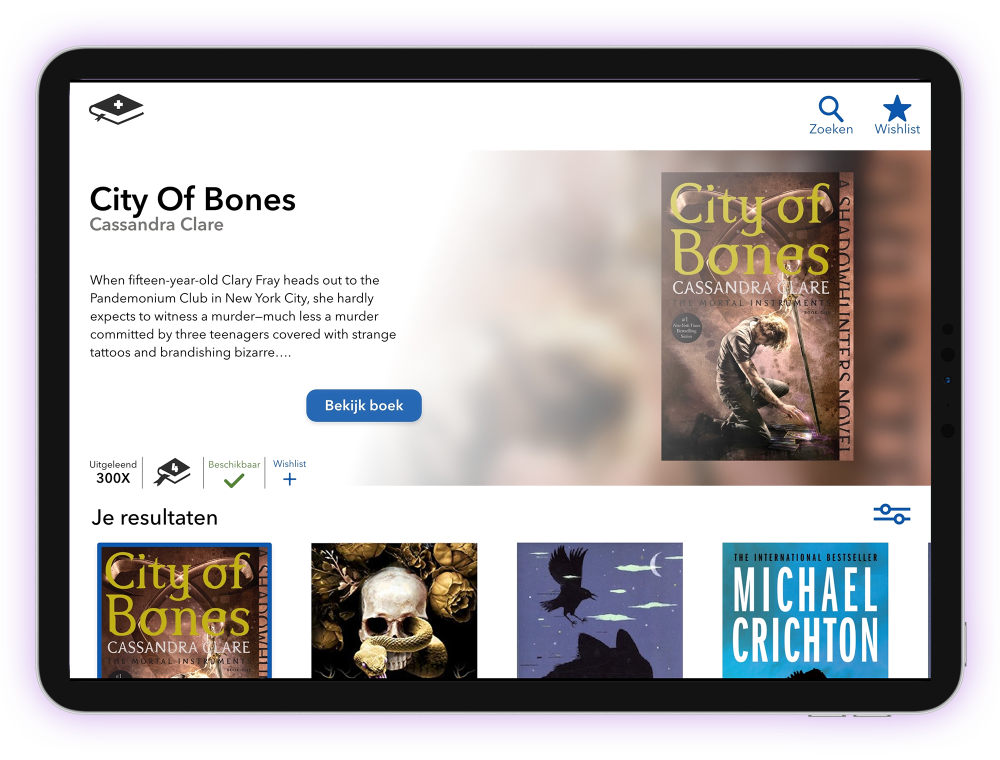

Schoolbieb app
Jaar: 2021
Vak: Visual Interface Design

De opdracht
Voor het vak Visual Interface Design kregen wij de opdracht om aan de hand van vijf schermen (of meer) een ‘visual design’ te maken voor een user interface voor het zoeken van één of meerdere boeken uit de schoolbibliotheek, voor scholieren uit VO onderbouw.
Elke week hield ik mijn werk bij in een procesboek. Hier is te zien hoe ik tot mijn ontwerp ben gekomen.
Mijn procesboek is via deze link te bekijken.
Niet is er alleen een procesboek opgeleverd, maar ook een iteratieslagendocument:
Wat ik heb geleerd van dit project is dat je niet altijd bij de huisstijl vast hoort te zitten. Je kan er altijd iets van afwijken als het product maar zijn werk goed doet. En hoe ik mijn kennis en vaardigheden op het gebied van visual interface design voor eenvoudige ontwerpproblemen contextspecifiek en doelgroepgericht kan inzetten.
Hieronder is de prototype te zien van mijn app:
Mocht mijn prototype hierboven niet te zien zijn klik dan op deze link.